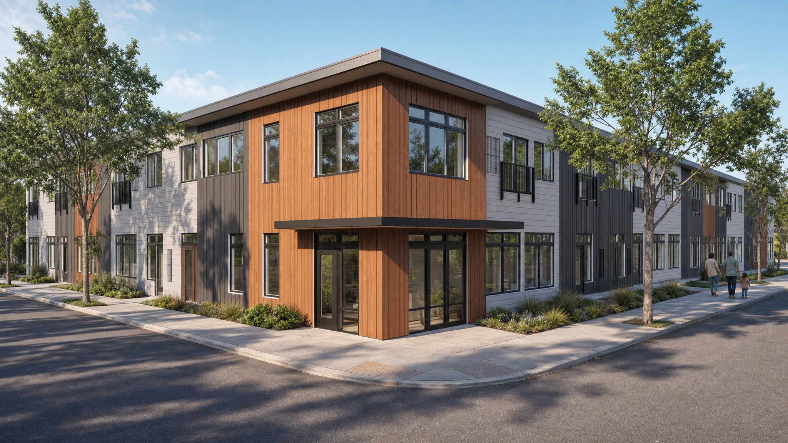
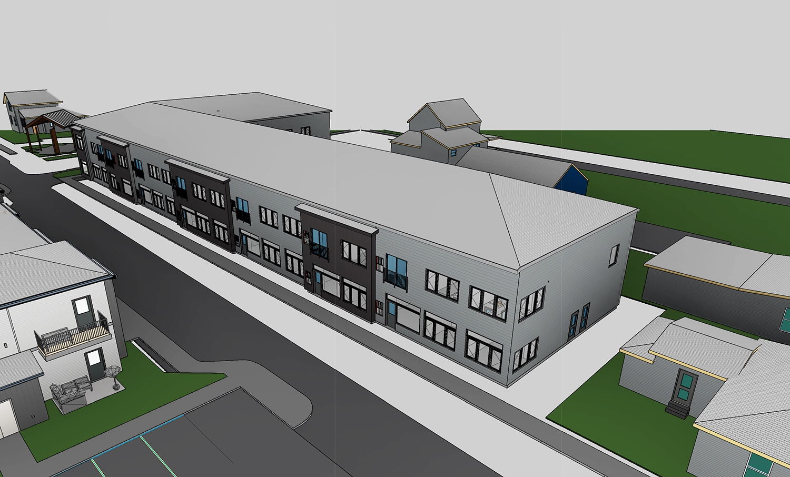
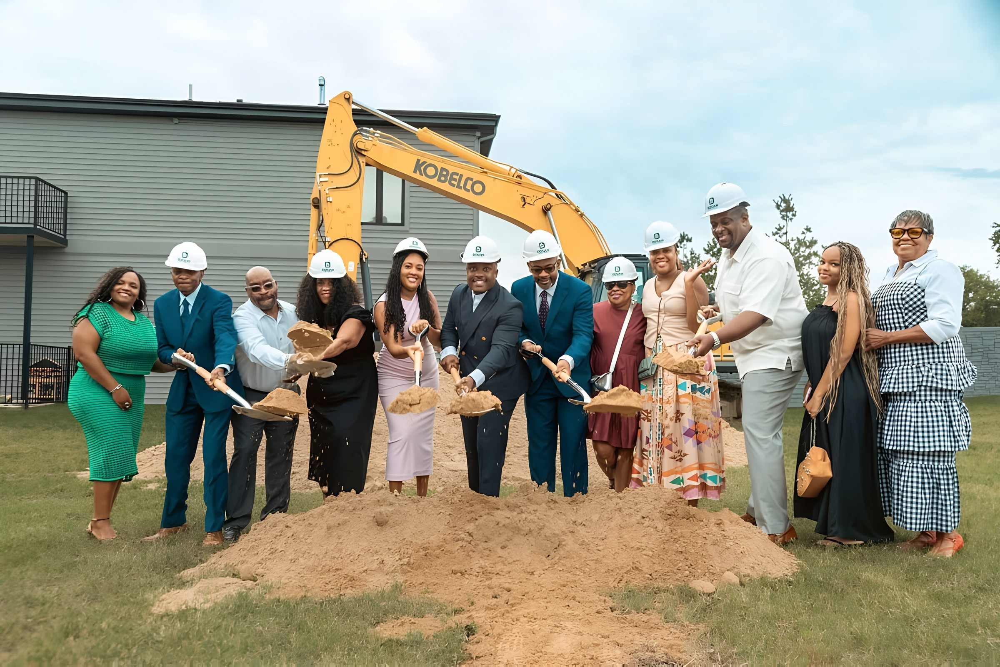
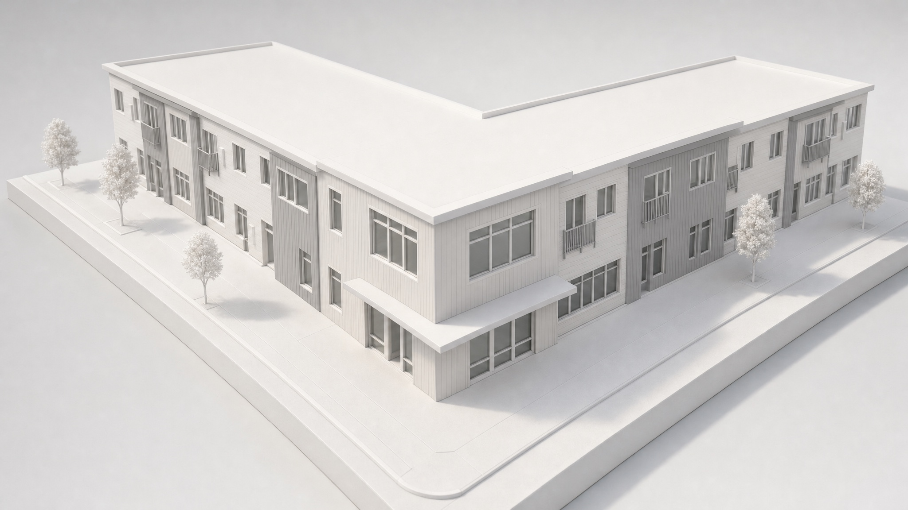

Under construction
Zone 32 Phase II
Workforce apartments in Northside Kalamazoo, with a community room and outdoor recreation, opening fall 2027.

Twelve homes came first. Thirty-eight more are going up across the street.
Phase II stands on a reclaimed brownfield directly across N. Pitcher Street from Phase I, adding 38 apartments to a block that already has twelve homes, an early learning center and commercial space.
The mix runs from ten studios to ten two-bedrooms, with eighteen one-bedrooms between, so one block can hold a range of households. A community room and an outdoor recreation area are in the plan, because a complete neighborhood is more than its front doors.
The architect is TowerPinkster. Pinnacle Construction Group is the construction manager.
See the floor plans- January 2026MSHDA board approves $1.5 million for workforce housingFunding
- June 2026Kalamazoo County Housing Millage commits $2 million, payable in 2027Funding
- September 10, 2026Groundbreaking on N. Pitcher StreetUnder construction
- Fall 202738 homes, community room and outdoor recreationTarget





Rendering
Find a home
Studios, one-bedrooms and two-bedrooms.

Rendering
The B on Burdick
Where an employer leases homes for its staff.